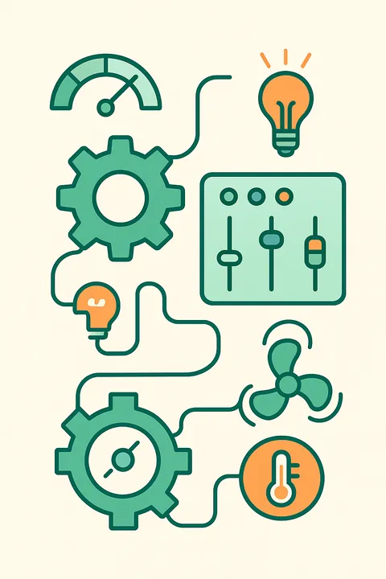

Les différentes typologies de CPE
Un outil adaptable selon le périmètre,
la gouvernance et les objectifs
Le Contrat de Performance Énergétique n’est pas un format unique. Il existe plusieurs typologies de CPE, chacune adaptée à une nature de patrimoine, une stratégie de maîtrise d’ouvrage et une capacité d’investissement différente.
Le bon choix de modèle dépend de :
- la taille du projet
- le niveau de garantie attendu
- la capacité de pilotage du donneur d’ordre
- les besoins en financement
- les contraintes juridiques (marché public ou privé)
Les grandes familles de CPE
On distingue principalement trois grandes catégories de CPE, définies par l’ADEME et le CSTB.
-
CPE Services (ou exploitation garantie)
🔧 Objet :
amélioration de l’exploitation et de la maintenance des installations énergétiques, avec un engagement de performance.📌 Caractéristiques :
- peu ou pas de travaux
- garantie d’une réduction de consommation (pilotage, réglages, comportement)
- engagement sur les résultats grâce à l’optimisation du fonctionnement
🗓️ Durée typique : 3 à 8 ans
👤 Clients types :
- gestionnaires de patrimoine
- collectivités
- tertiaire privé avec équipements déjà rénovés
✅ Avantages :
- mise en œuvre rapide
- peu d’investissement
- idéal pour une montée en compétence progressive
⚠️ Limites :
- moins d’impact structurel
- dépend fortement des usages
 -
CPE Travaux + Services
🔧🔨 Objet :
combiner des travaux d’amélioration énergétique (isolation, relamping, ventilation, etc.) avec un contrat d’exploitation incluant une garantie de performance énergétique globale.📌 Caractéristiques :
- audit et travaux d’efficacité énergétique
- maintenance des équipements sur la durée
- engagement contractuel sur les économies d’énergie
- contrôle par mesure & vérification
🗓️ Durée typique : 6 à 12 ans
👤 Clients types :
- collectivités locales
- établissements scolaires
- hôpitaux
- industriels
- bailleurs sociaux
✅ Avantages :
- impact fort sur les consommations
- garantie pluriannuelle
- partage des risques technique et financier
⚠️ Limites :
- processus plus long
- mobilisation financière nécessaire (ou tiers-financement)
-
CPE Tiers-financement (ou CPE avec investissement externe)
💶 Objet :
le prestataire ou un tiers prend en charge l’investissement initial (travaux, équipements, etc.), en se rémunérant grâce aux économies d’énergie générées.📌 Caractéristiques :
- intégré dans des montages type Energy Performance Contracting (EPC)
- peut s’appuyer sur des contrats de location, crédit-bail, BEA, Intracting
- idéal pour les structures sans capacité d’investissement
🗓️ Durée typique : 8 à 15 ans
👤 Clients types :
- communes à faible budget
- copropriétés
- bailleurs
- PME
✅ Avantages :
- aucun investissement initial requis
- accès facilité à la rénovation
- paiement indexé sur la performance réelle
⚠️ Limites :
- durée longue (8 à 15 ans)
- contractualisation complexe
- nécessite un partenaire de confiance
Spécificités des CPE dans le secteur public
Dans le cadre des marchés publics, plusieurs formes juridiques permettent de porter un CPE :
🧩 MPA (marché à prestations séparées)
Séparation entre audit, travaux et exploitation
🔁 CREM (Conception-Réalisation-Exploitation-Maintenance)
Marché global avec engagement de performance sur tout le cycle de vie
🎯 MPGP (marché public global de performance)
Intègre la conception, réalisation, maintenance ET engagement de performance
🔄 Intracting public
Financement interne avec retour sur économies réalisées
📝 À noter : la commande publique impose le respect du Code de la commande publique, notamment sur la transparence, la mise en concurrence et la proportionnalité des clauses de pénalité.
Comment choisir la bonne typologie de CPE ?
Critère
- Besoin en travaux
- Objectif d’économie
- Durée d’engagement
- Risque porté par client
- Financement externe possible
- Complexité juridique
CPE Services
- Faible
- 5 à 15 %
- 3 à 5 ans
- Moyen
- Non
- Faible
CPE Travaux + Services
- Modéré à fort
- 20 à 40 %
- 6 à 12 ans
- Faible à moyen
- Partiel
- Moyenne
CPE Tiers-financement
- Fort
- 25 à 50 %
- 8 à 15 ans
- Faible
- Oui
- Élevée
Quel modèle pour votre situation ?
Il n’existe pas un seul bon CPE, mais une solution à adapter à chaque situation. Un diagnostic initial, accompagné si besoin d’un AMO expérimenté, permet de définir la stratégie contractuelle optimale.